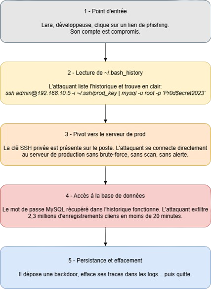

Le monde de julpic!
Network Attack Simulator (NASim) is a lightweight, high-level network attack simulator written in python. It is designed to be used for rapid testing of autonomous pen-testing agents using reinforcement learning and planning. It is a simulator by definition so does not replicate all details of attacking a real system but it instead aims to capture some of the more salient features of network pen-testing such as the large and changing sizes of the state and action spaces, partial observability and varied network topology.
The environment is modelled after the gymnasium (formerly Open AI gym) interface.
Gestion des droits utilisateurs
Pourquoi les droits doivent être limités
Attribuer des droits trop larges, même en lecture seule, peut introduire des failles de sécurité importantes.
Un exemple classique est l’accès au fichier .bash_history d’un utilisateur. Ce fichier contient l’historique des commandes exécutées dans le terminal, et peut exposer :
Des mots de passe saisis en clair
Des commandes d’administration sensibles
Des chemins vers des fichiers critiques
Des informations sur l’architecture du système
Même sans accès en écriture, un attaquant peut exploiter ces informations pour :
Escalader ses privilèges
Accéder à des services internes
Rejouer certaines commandes critiques
Exemple d’attaque via .bash_history
Le diagramme ci-dessous illustre une attaque typique exploitant un fichier .bash_history accessible en lecture :
{kind=link}

Conclusion
Le principe du moindre privilège doit toujours être appliqué :
Un utilisateur ne doit avoir accès qu’aux ressources strictement nécessaires
Même les droits en lecture doivent être contrôlés
Les fichiers sensibles doivent être protégés, y compris contre la simple consultation
What’s new
Version 0.12.0
Renamed NASimEnv.get_minimum_actions -> NASimEnv.get_minumum_hops to better reflect what it does (thanks @rzvnbr for the suggestion).
Version 0.11.0
Migrated to gymnasium (formerly Open AI gym) fromOpen AI gym (thanks @rzvnbr for the suggestion).
Fixed bug with action string representation (thanks @rzvnbr for the bug report)
Added “sim to real considerations” explanation document to the docs (thanks @Tudyx for the suggestion)
Version 0.10.1
Fixed bug for host based actions (thanks @nguyen-thanh20 for the bug report)
Version 0.10.0
Fixed typos (thanks @francescoluciano)
Updates to be compatible with latest version of OpenAI gym API (v0.25) (see Open AI gym API docs for details), notable changes include
Updated naming convention when initializing environments using the
gym.makeAPI (see gym load docs for details.)Updated reset function to match new gym API (shouldn’t break any implementations using old API)
Updated step function to match new gym API. It now returns two bools, the first specifies if terminal/goal state has been reached and the other specifies if the episode is terminated due to the scenario step limit (if any exists) has been reached. This change may break implementations and you may need to specify (or not) when initializing the gym environment using
gym.make(env_id, new_step_api=True)
Version 0.9.1
Fixed a few bugs and added some tests (thanks @simonsays1980 for the bug reports)
Version 0.9.0
The value of a host is now observed when any level of access is gained on a host. This makes it so that agents can learn to decide whether to invest time in gaining root access on a host or not, depending on the host’s value (thanks @jaromiru for the proposal).
Initial observation of reachable hosts now contains the host’s address (thanks @jaromiru).
Added some support for custom address space bounds in when using scenario generator (thanks @jaromiru for the suggestion).
Version 0.8.0
Added option of specifying a ‘value’ for each host when defining a custom network using the .YAML format (thanks @Joe-zsc for the suggestion).
Added the ‘small-honeypot’ scenario to included scenarios.
Version 0.7.5
Added ‘undefined error’ to observation to fix issue with initial and later observations being indistinguishable.
Version 0.7.4
Fixed issues with incorrect observation of host ‘value’ and ‘discovery_value’. Now, when in partially observable mode, the agent will correctly only observe these values on the step that they are recieved
Some other minor code formatting fixes
Version 0.7.3
Fixed issue with scenario YAML files not being included with PyPi package
Added final policy visualisation option to DQN and Q-Learning agents
Version 0.7.2
Fixed bug with ‘re-registering’ Gym environments when reloading modules
Added example implementations of Tabular Q-Learning: agents/ql_agent.py and agents/ql_replay.py
Added Agents section to docs, along with other minor doc updates
Version 0.7.1
Added some scripts for running random benchmarks and describing benchmark scenarios
Added some more docs (including for creating custom scenarios) and updated other docs
Version 0.7
Implemented host based firewalls
Added priviledge escalation
Added a demo script, including a pre-trained agent for the ‘tiny’ scenario
Fix to upper bound calculation (factored in reward for discovering a host)
Version 0.6
Implemented compatibility with gym.make()
Updated docs for loading and interactive with NASimEnv
Added extra functions to nasim.scenarios to make it easier to load scenarios seperately to a NASimEnv
Fixed bug to do with class attributes and creating different scenarios in same python session
Fixed up bruteforce agent and tests
Version 0.5
First official release on PyPi
Cleaned up dependencies, setup.py, etc and some small fixes
First stable version
The Docs
How should I cite NASim?
Please cite NASim in your publications if you use it in your research. Here is an example BibTeX entry:
@misc{schwartz2019nasim,
title={NASim: NJP},
author={Schwartz, Jonathon and Kurniawatti, Hanna},
year={2019},
howpublished={\url{https://Julpic08.readthedocs.io/}},
}